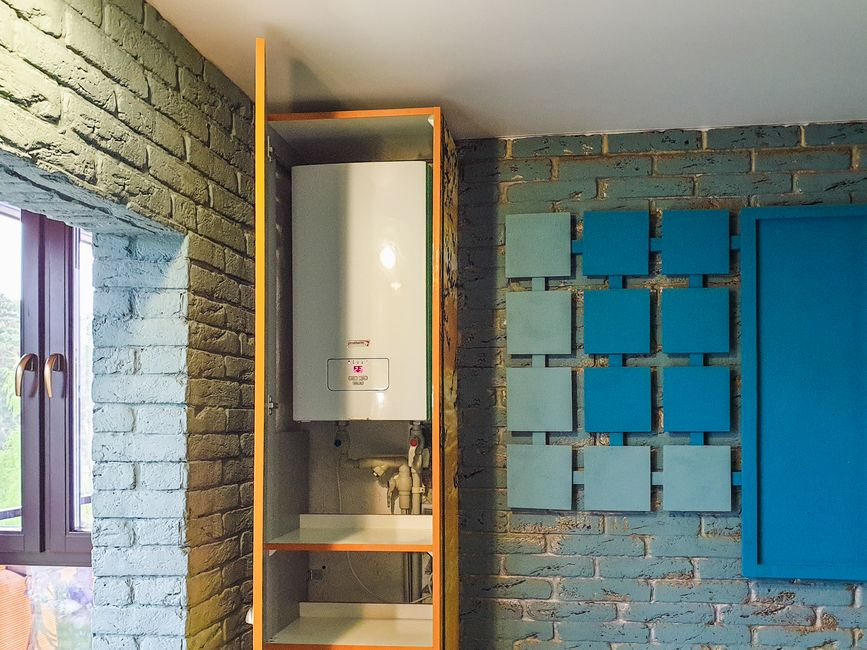
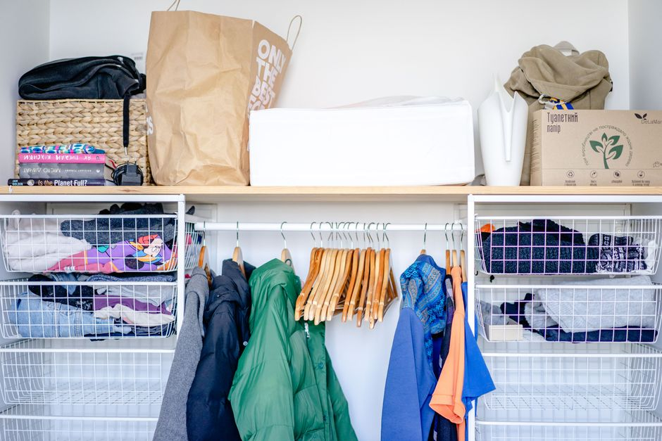

Creating Hidden Storage Spaces in Your Small Apartment

Photo: Алексей Вечерин / Pexels
Measure Twice, Cut Once
Before diving into your small apartment’s design, take precise measurements of all available nooks and crannies. This will help you plan the most effective storage solutions. Consider the height, width, and depth of your space to ensure you’re making the most of every inch.
Clever Closet Solutions

Photo: Atlantic Ambience / Pexels
Under-Bed Storage
Install low-profile shelving or drawers under your bed. This not only saves space but also keeps things out of sight. Use them for extra bedding, seasonal clothes, or less frequently used items.
Wall-Mounted Shelves
Install floating shelves on the back of your closet door. They can hold a variety of items, from shoes to books. Use clear, labeled bins to maintain a tidy appearance.
Furniture with Hidden Storage
Convertible Coffee Tables
Choose a coffee table with drawers or extra storage compartments. Perfect for keeping magazines, remote controls, or a small plant out of view.
Multi-Functional Chairs
Consider furniture that can double as storage. For instance, ottomans with hidden storage can be used to keep away toys, extra blankets, or other small items.
Vertical Storage
Closet Rods
Maximize vertical space by adding extra closet rods. This allows you to store items vertically, freeing up floor space. Use stackable hangers and vertical organizers to keep everything neat.
Wall Hooks
Install hooks on the walls for hanging bags, jackets, or even scarves. This can help keep surfaces clear and maintain a minimalist look.
DIY Shelves and Bins
DIY Shelves
Create DIY floating shelves using brackets and lightweight materials like lightweight metal or wood. These can be used to hold books, plants, or decorative items, making them less obvious.
Wire Baskets
Use wire baskets for storing items like toys or office supplies. They are easy to clean and can be hidden behind furniture or in corners.
Hidden Compartments
Built-In Bookshelves
If you have a bookshelf, consider adding hidden compartments or pull-out shelves. These can be used for storing things like DVDs, video games, or extra clothing.
Under-Counter Storage
In kitchen and bathroom cabinets, add pull-out shelves or under-cabinet storage units. These can be used for storing cleaning supplies, snacks, or toiletries.
Organizing Tips
Label Everything
Labeling bins and containers can help you keep everything organized and easily accessible. It’s especially useful in small spaces where every bit of clarity helps.
Declutter Regularly
Periodically reassess your belongings and get rid of items you no longer need. This keeps your space more organized and visually appealing.
Use Clear Containers
Clear containers can be a game-changer in small spaces. They allow you to see what’s inside without opening the container, reducing the temptation to rummage through everything.
By following these strategies, you can create a more organized and clutter-free environment in your small apartment, making the most of every available space.
Recommended products
As an Amazon Associate, I earn from qualifying purchases.